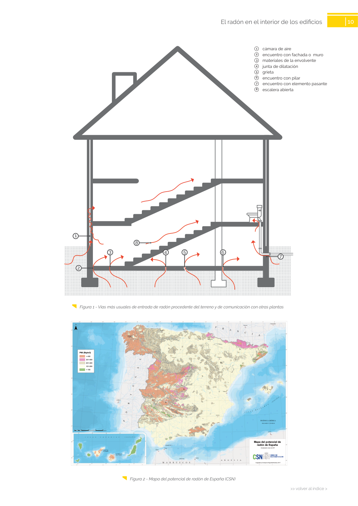
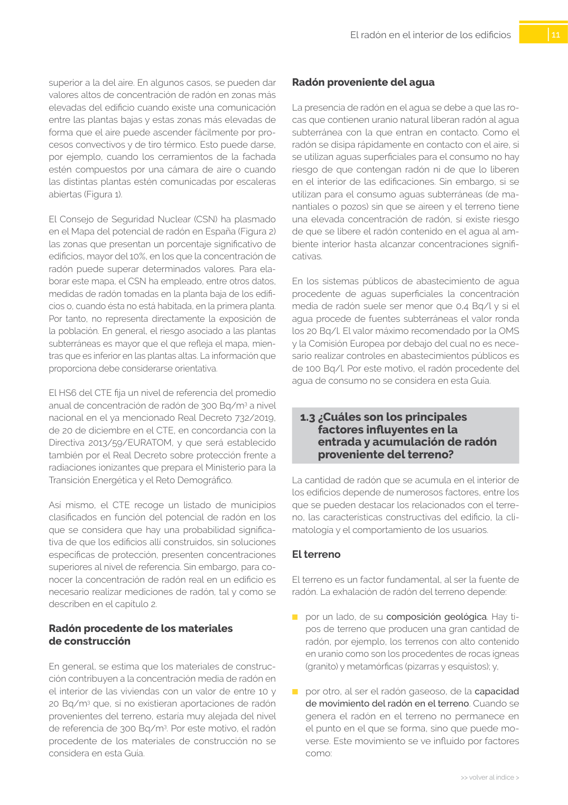

Guia de rehabilitacion frente al radon Fichas · edición sin-fecha · capa guia
Documento GUIA-PDF-f3314b0414fe · SHA-256 del PDF e58e54b822cf4ab00e258f0eb50c0f06a8c04e3730a7f530d224485e2a5bb02e
Copia fiel del PDF fuente · Fuente oficial
Ficha de la disposición en la fuente oficial
Créditos y autoría en el PDF fuente. Reproducción con cita de fuente y autores.
Permiso literal: Se permite la reproducción total o parcial del contenido de este nible en el momento de su publicación. No se aceptará por las institu documento siempre y cuando se cite la fuente original
Este documento ha sido elaborado por el Instituto de ciencias
de la construcción Eduardo Torroja (IETcc) bajo la supervisión
de la Dirección General de Agenda Urbana y Arquitectura del
Ministerio de Transportes, Movilidad y Agenda Urbana (MITMA).
El IETcc, perteneciente al Consejo Superior de Investigaciones
Científicas (CSIC), es el centro de investigación en edificación
de referencia en España. La Unidad de Calidad en la Construc
ción del IETcc asesora al MITMA en la elaboración del Código
Técnico de la Edificación que, desde el año 2019, cuenta con la
sección HS6 Protección frente a la exposición al radón.
Dirección y Coordinación:
Ministerio de Transportes, Movilidad y Agenda Urbana
Isabel Marcos Anasagasti
Raquel Lara Campos
Eduardo González de Prado
Instituto de ciencias de la construcción Eduardo Torroja CSIC
Pilar Linares Alemparte
Autoras:
Pilar Linares Alemparte
Sonia García Ortega
Colaboradoras:
Virginia Sánchez Ramos
Karina Angélica García Pardo
Edita:
Centro de Publicaciones Secretaría General Técnica
Ministerio de Transportes, Movilidad y Agenda Urbana©
Entidad colaboradora:
Consejo Superior de Investigaciones Científicas · CSIC
Ministerio de Ciencia e Innovación
Catálogo de publicaciones de la Administración General
del Estado: publicacionesoficiales.boe.es
Centro virtual de publicaciones del Ministerio de Transpor
tes, Movilidad y Agenda Urbana: www.mitma.gob.es
Página web del Código Técnico de la Edificación:
SECRETARÍA GENERAL DE www.codigotecnico.org AGENDA URBANA Y VIVIENDA MINISTERIO GOBIERNO DE TRANSPORTES, MOVILIDAD DE ESPAÑA Y AGENDA URBANA DIRECCIÓN GENERAL DE
Maquetación y diseño gráfico: AGENDA URBANAY ARQUITECTURA
Lapizmente. Estrategia • Diseño Gráfico
CIENCIAFotografía portada: GOBIERNODE ESPAÑA MINISTERIODEE INNOVACIÓN
Sonia García Ortega
Los contenidos o ideas recogidas en este documento pertenecen a
sus autores. Este documento está basado en el conocimiento dispo Se permite la reproducción total o parcial del contenido de este
nible en el momento de su publicación. No se aceptará por las institu documento siempre y cuando se cite la fuente original y a sus
ciones ni los autores implicados responsabilidad de ningún tipo por el autores.
uso de estas recomendaciones. Las figuras tienen carácter ilustrativo
y no deben interpretarse como detalles constructivos.Formatos: JSON del segmento · Markdown
¯ P90 (Bq/m3) > 400 301-400 201-300 101-200 < 100 0 50 100 150 200 25 Kilómetros LOGO CSN Copyright (c) Consejo de Seguridad Nuclear, 2017 11 >> volver al índice > >> volver al índice > El radón en el interior de los edificios superior a la del aire. En algunos casos, se pueden dar valores altos de concentración de radón en zonas más elevadas del edificio cuando existe una comunicación entre las plantas bajas y estas zonas más elevadas de forma que el aire puede ascender fácilmente por pro cesos convectivos y de tiro térmico. Esto puede darse, por ejemplo, cuando los cerramientos de la fachada estén compuestos por una cámara de aire o cuando las distintas plantas estén comunicadas por escaleras abiertas (Figura 1). El Consejo de Seguridad Nuclear (CSN) ha plasmado en el Mapa del potencial de radón en España (Figura 2) las zonas que presentan un porcentaje significativo de edificios, mayor del 10%, en los que la concentración de radón puede superar determinados valores. Para ela borar este mapa, el CSN ha empleado, entre otros datos, medidas de radón tomadas en la planta baja de los edifi cios o, cuando ésta no está habitada, en la primera planta. Por tanto, no representa directamente la exposición de la población. En general, el riesgo asociado a las plantas subterráneas es mayor que el que refleja el mapa, mien tras que es inferior en las plantas altas. La información que proporciona debe considerarse orientativa. El HS6 del CTE fija un nivel de referencia del promedio anual de concentración de radón de 300 Bq/m3 a nivel nacional en el ya mencionado Real Decreto 732/2019, de 20 de diciembre en el CTE, en concordancia con la Directiva 2013/59/EURATOM, y que será establecido también por el Real Decreto sobre protección frente a radiaciones ionizantes que prepara el Ministerio para la Transición Energética y el Reto Demográfico. Así mismo, el CTE recoge un listado de municipios clasificados en función del potencial de radón en los que se considera que hay una probabilidad significa tiva de que los edificios allí construidos, sin soluciones específicas de protección, presenten concentraciones superiores al nivel de referencia. Sin embargo, para co nocer la concentración de radón real en un edificio es necesario realizar mediciones de radón, tal y como se describen en el capítulo 2.

